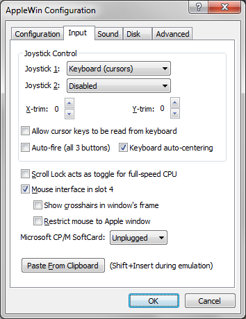

Input Settings

Joystick Control:
These options allow you to configure up to two joysticks attached to
the emulated Apple //e system.
- Joystick 1/2: Choose the emulation method for joysticks 1 and 2.
- X/Y-trim: These controls add a trim value to the
joystick X/Y offsets when the joystick is centered. Normally central
position is X=127, Y=127 so this adds the trim value for PC joysticks
& keyboard (centering). If you are using an analog PC joystick,
then you should leave these values at 0.
Paste from clipboard:
Pressing this button will allow you to paste text from the
Windows' clipboard into the emulated Apple //e.